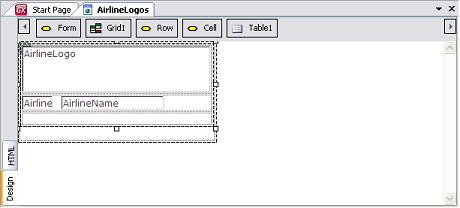
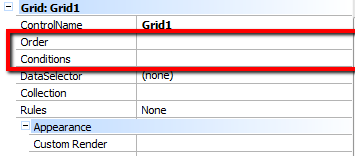

The Free Style grid, which can be used in Web interface objects (transactions and web panels), allows users to format the data so that it is displayed in a more flexible way than in the standard grid. Basically, it is a table where we can add attributes/variables, text blocks, images, buttons, web components, embedded pages, other Free Style grids and/or grids that will later be displayed on the screen. This kind of grid does not have titles for columns and accepts more than one type of control, attribute or variable in the same cell, providing greater design freedom. At runtime, the grid is an HTML table. To add a Free Style Grid control to the selected location, drag the corresponding icon from the toolbox to the Web Form. ExampleThis example shows a Web Panel with the logo of each commercial airline related to the company. The following image shows the object at edit time.  A Free Style Grid control was first added to the form in order to insert the attributes of the Airline transaction. When you select several attributes to be inserted in the form (in this case, inside the Free Style Grid), GeneXus automatically inserts them in a table to enchance their alignment. But using a table is optional. At runtime, the Web Panel is displayed as follows. Orders and ConditionsWhen working with Free Style grids in web panels, it is possible to set orders and conditions in order to establish them to grid elements, That is not possible on generated Transaction grids (such as level generated grids), as it is assumed to be showing every element from a record on update or delete mode. To set them, in Grid properties you can find them under ControlName  Note. The report was created with four columns. To do this, the Rows property of the Free Style Grid control must be set to the correct value, which in this case is 4.
|